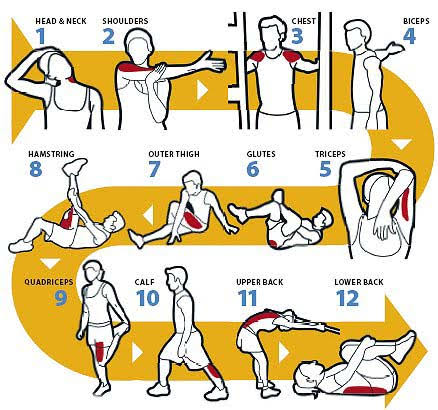

Importance of Youth Sports
Youth sports play an important role in helping young people develop healthy habits, confidence, teamwork, and discipline. Participating in sports gives children and teenagers opportunities to stay active while learning how to communicate, solve problems, and work toward shared goals. Sports can also teach valuable lessons about perseverance, responsibility, and handling both success and disappointment. Whether it is soccer, basketball, swimming, baseball, or another activity, youth sports can help young people build friendships and develop skills that benefit them both on and off the field. To learn more about the importance of youth sports, Visit Learn More!.
Preparation for Youth Sports
Preparation is an important part of participating in youth sports. Before playing, athletes should warm up and stretch to prepare their muscles and reduce the risk of injury. They should also get enough sleep, eat nutritious foods, and drink plenty of water to keep their bodies energized and healthy. Having the right equipment, following safety rules, and listening to coaches are also important. Good preparation helps young athletes feel confident, perform their best, and enjoy the sport.

Benefits of Youth Sports
Participating in youth sports offers numerous benefits for young people. It promotes physical fitness, mental well-being, and social development. Sports help children and teenagers build self-esteem, learn to work as a team, and develop leadership skills. They also provide a healthy outlet for energy and stress, and can foster lifelong habits of exercise and wellness. Some of the top benefits include:
- Physical Fitness
- Mental Well-being
- Social Development